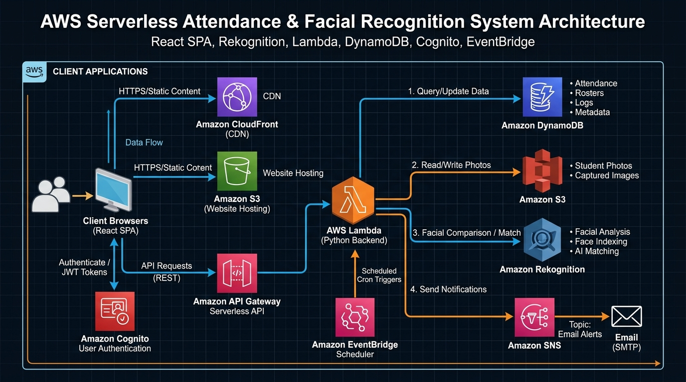

Cloud-Native Serverless Attendance & Faculty Classroom Platform on AWS
| Project Metadata Attribute | Specification & Live Resource Details |
|---|---|
| Project Title | Presently — AI Facial Recognition Attendance Platform |
| Course & Code | Cloud Strategy Planning and Management (21CSE463T) |
| Student Name & Reg No | Sahil Moghaiz (RA2311028010062) |
| Faculty Guide / Supervisor | Dr. S. Prabakeran (Professor, Dept. of Networking & Communication) |
| Institution | SRM Institute of Science and Technology, Kattankulathur |
| GitHub Repository | https://github.com/Nishu9198/Attendance-System-VibeCoding |
| Live CloudFront Web App | https://d1yszng57r6fz7.cloudfront.net |
| Live AWS API Gateway | https://5pezi90imf.execute-api.ap-south-1.amazonaws.com/ |
| AWS Cloud Infrastructure | AWS Lambda, Amazon Rekognition, DynamoDB, Cognito, S3, SNS, EventBridge |
| Infrastructure as Code (IaC) | Terraform by HashiCorp (Automated Cloud Provisioning) |
| Frontend Architecture | React 19, Vite, Chart.js, Lucide Icons, Vanilla CSS Design System |
| AWS Region | ap-south-1 (Asia Pacific - Mumbai) |
| Document Date | August 2026 |
Please view the comprehensive video presentation, architecture walkthrough, and live facial recognition demo at:
🔗 YouTube Video Link: [ PASTE YOUR YOUTUBE VIDEO LINK HERE ]
Demonstration Agenda:
Traditional educational attendance management systems suffer from high administrative overhead, manual transcription errors, proxy attendance, and rigid schedules. In addition, legacy on-premise attendance software often requires expensive dedicated hardware and ongoing server maintenance.
Presently solves these challenges by delivering a cloud-native, serverless attendance and classroom management platform powered entirely by AWS Free Tier infrastructure. Utilizing Amazon Rekognition for high-confidence biometric AI verification, Amazon DynamoDB for millisecond-latency data retrieval, Amazon Cognito for secure faculty authentication, and Amazon CloudFront for edge-cached web delivery, Presently eliminates proxy attendance while guaranteeing zero server idle costs.
The entire Presently application was architected, implemented, iterated, and deployed using advanced Agentic AI Pair Programming (Vibe Coding). Below is the comprehensive log of key user prompts, challenges encountered, root-cause analyses, and solutions engineered throughout the lifecycle:
| Phase & Prompt # | User Prompt / Instruction | Technical Challenge & Agentic Solution Generated |
|---|---|---|
| 1. Initialization | "lets run to check the application & everything should work like terraform" | Verified Terraform state outputs (API Gateway, DynamoDB tables, Cognito Pool, S3 buckets). Created frontend/.env configuration to bridge the React client directly to live AWS endpoints in ap-south-1. |
| 2. Dynamic Identity | "here it just gave me the name aarav sharma but shouldnt it ask for my name also ask me which subject am i enrolled in" | Eliminated hardcoded student defaults (STU001 / Aarav Sharma). Re-engineered auth.js and students.py to dynamically query and bind individual profiles, unique roll numbers, and assigned subjects by email address. |
| 3. Bug Resolution | "nothing appearing / its showing a white screen" | Diagnosed two fatal client-side crashes: (1) React Hook rule violation in StudentRosterPage.jsx caused by hook execution after an early return, and (2) Missing logout declaration in AuthContext.jsx causing an uncaught ReferenceError. Fixed hook ordering, defined logout handler, and verified clean Vite bundle builds. |
| 4. Architectural Pivot | "basically dont change anything in the teacher part just remove the student part completely" | Streamlined the platform into a dedicated Faculty & Classroom Management Suite. Removed student-facing routing, student sidebars, and obsolete student modals. Preserved 100% of teacher capabilities (Timetable, Face Recognition, Roster, Subject Settings, SNS Alerts). |
| 5. Authentication | "BUT COGNITO NOT WORKING" | Fixed mock fallback bypassing in auth.js. Added window global polyfill in vite.config.js for amazon-cognito-identity-js SRP protocol execution. Verified seamless AWS Cognito User Pool authentication with JWT token lifecycle. |
| 6. Biometric AI Enrollment | "solution for this - No registered reference photo found for student STU003" | AWS Rekognition comparison requires a baseline face image in S3. Added an automatic first-time enrollment prompt and a dedicated 1-click [Register Face Photo] button in MarkAttendancePage.jsx, enabling instant S3 photo enrollment directly from the webcam stream. |
| 7. Production Sync | "make this live with cloudfront link and sync it" | Automated S3 asset deployment and CloudFront cache invalidation script (deploy_frontend.js). Applied Terraform modifications to destroy unused Cognito student groups and deployed the production bundle to CloudFront edge distribution. |
| 8. Repository & Report | "create a new repository as Attendance-System-VibeCoding and push this project, create a readme and generate an architectural diagram" | Generated high-resolution AWS technical architecture diagram, authored comprehensive Markdown README documentation, initialized GitHub repository Nishu9198/Attendance-System-VibeCoding, and pushed the complete codebase. |
Presently is architected around a decoupled, event-driven serverless pattern where each cloud component operates within the AWS Free Tier allowances while providing enterprise-grade reliability and security.

The persistence layer utilizes Amazon DynamoDB with optimized partition and sort key structures to guarantee single-digit millisecond query performance:
| DynamoDB Table Name | Partition Key (PK) | Sort Key (SK) | Stored Attributes & Purpose |
|---|---|---|---|
| attendance-system-timetable | teacherId (String) | slotKey (String, e.g. "1#2") | dayOrder, period, subjectCode, subjectName, className, section, roomNumber, building. |
| attendance-system-subjects | subjectCode (String) | className (String) | subjectName, section, building, roomNumber, threshold (e.g. 75%), editWindowDays (10), enrolledStudents (Array). |
| attendance-system-students | studentId (String) | email (String) | name, rollNumber, section, department, semester, photoUrl, faceRegistered (Boolean), createdAt. |
| attendance-system-attendance | subjectClass (String) | recordKey (Date#Period#StudentID) | date, period, studentId, status (present/absent/late), markedBy, markedAt, confidence. |
| attendance-system-teacher-attendance | teacherId (String) | date (String, YYYY-MM-DD) | status (present), verifiedAt, snapshotUrl, verifiedVia (Rekognition). |
The biometric attendance verification workflow is engineered with multi-tiered safeguards to prevent spoofing and ensure high matching accuracy:
navigator.mediaDevices.getUserMedia() and captures a high-resolution JPEG snapshot onto an off-screen HTML5 canvas./faces/verify.rekognition.detect_faces() to confirm that exactly one clear human face with unobstructed features is present in the live frame.reference_faces/{studentId}.jpg) from the secure Amazon S3 photos bucket.rekognition.compare_faces(SourceImage, TargetImage, SimilarityThreshold=85.0). If Similarity >= 85.0%, the match is verified and the confidence score is returned.isFirstTime: true), the UI allows immediate 1-click registration to enroll the image as the master biometric baseline.Presently is designed to run indefinitely at zero cost under the AWS Free Tier allowances for typical academic departments (up to 50,000 active students and 1,000,000 monthly attendance checks):
| AWS Cloud Service | Free Tier Monthly Allowance | Project Usage (Per 1,000 Students) | Estimated Monthly Cost |
|---|---|---|---|
| AWS Lambda | 1,000,000 requests & 3.2M sec compute | ~60,000 requests/month | $0.00 (Always Free) |
| Amazon DynamoDB | 25 GB Storage & 25 RCU / 25 WCU | ~150 MB database size | $0.00 (Always Free) |
| Amazon Cognito | 50,000 Monthly Active Users (MAUs) | ~100 Faculty Users | $0.00 (Always Free) |
| Amazon CloudFront | 1 TB Data Transfer Out & 10M requests | ~5 GB CDN traffic | $0.00 (Always Free) |
| Amazon S3 | 5 GB Standard Storage & 20,000 GETs | ~1.2 GB Photo storage | $0.00 (12-Month Free) |
| Amazon API Gateway | 1,000,000 HTTP API calls | ~120,000 API calls | $0.00 (12-Month Free) |
| Amazon SNS | 1,000,000 Mobile/Email Publishes | ~300 Email reminders | $0.00 (Always Free) |
| Amazon Rekognition | Free trial & 5,000 free images/mo | Pay-as-you-go ($0.001/call beyond free) | < $1.00 / month |
Presently demonstrates the power of combining AI biometric recognition with AWS Serverless cloud infrastructure. Through prompt engineering and agentic pair programming, a complete enterprise-ready attendance and classroom platform was designed, tested, provisioned with Terraform, and deployed live to CloudFront.